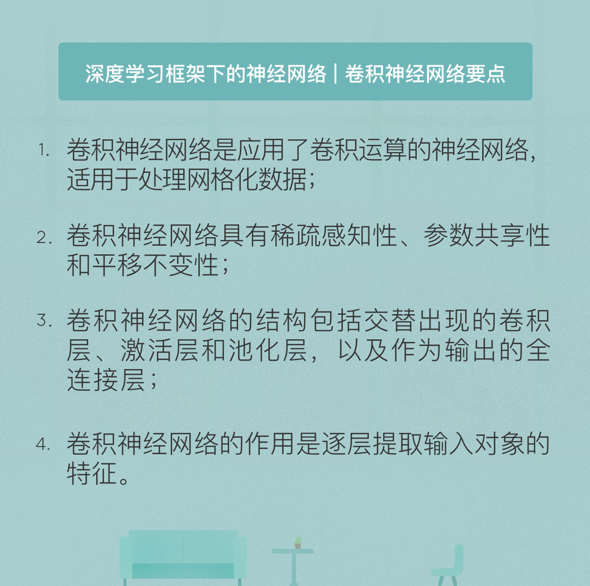

- 00 开篇词 人工智能：新时代的必修课.md.html
- 01 数学基础 九层之台，起于累土：线性代数.md.html
- 02 数学基础 月有阴晴圆缺，此事古难全：概率论.md.html
- 03 数学基础 窥一斑而知全豹：数理统计.md.html
- 04 数学基础 不畏浮云遮望眼：最优化方法.md.html
- 05 数学基础 万物皆数，信息亦然：信息论.md.html
- 06 数学基础 明日黄花迹难寻：形式逻辑.md.html
- 07 机器学习 数山有路，学海无涯：机器学习概论.md.html
- 08 机器学习 简约而不简单：线性回归.md.html
- 09 机器学习 大道至简：朴素贝叶斯方法.md.html
- 10 机器学习 衍化至繁：逻辑回归.md.html
- 11 机器学习 步步为营，有章可循：决策树.md.html
- 12 机器学习 穷则变，变则通：支持向量机.md.html
- 13 机器学习 三个臭皮匠，赛过诸葛亮：集成学习.md.html
- 14 机器学习 物以类聚，人以群分：聚类分析.md.html
- 15 机器学习 好钢用在刀刃上：降维学习.md.html
- 16 人工神经网络 道法自然，久藏玄冥：神经网络的生理学背景.md.html
- 17 人工神经网络 一个青年才俊的意外死亡：神经元与感知器.md.html
- 18 人工神经网络 左手信号，右手误差：多层感知器.md.html
- 19 人工神经网络 各人自扫门前雪：径向基函数神经网络.md.html
- 20 人工神经网络 看不见的手：自组织特征映射.md.html
- 21 人工神经网络 水无至清，人莫至察：模糊神经网络.md.html
- 22 深度学习 空山鸣响，静水流深：深度学习概述.md.html
- 23 深度学习 前方有路，未来可期：深度前馈网络.md.html
- 24 深度学习 小树不修不直溜：深度学习中的正则化.md.html
- 25 深度学习 玉不琢不成器：深度学习中的优化.md.html
- 26 深度学习 空竹里的秘密：自编码器.md.html
- 27 深度学习 困知勉行者勇：深度强化学习.md.html
- 28 深度学习框架下的神经网络 枯木逢春：深度信念网络.md.html
- 29 深度学习框架下的神经网络 见微知著：卷积神经网络.md.html
- 30 深度学习框架下的神经网络 昨日重现：循环神经网络.md.html
- 31 深度学习框架下的神经网络 左右互搏：生成式对抗网络.md.html
- 32 深度学习框架下的神经网络 三重门：长短期记忆网络.md.html
- 33 深度学习之外的人工智能 一图胜千言：概率图模型.md.html
- 34 深度学习之外的人工智能 乌合之众的逆袭：集群智能.md.html
- 35 深度学习之外的人工智能 授人以鱼不如授人以渔：迁移学习.md.html
- 36 深度学习之外的人工智能 滴水藏海：知识图谱.md.html
- 37 应用场景 你是我的眼：计算机视觉.md.html
- 38 应用场景 嘿, Siri：语音处理.md.html
- 39 应用场景 心有灵犀一点通：对话系统.md.html
- 40 应用场景 数字巴别塔：机器翻译.md.html
- 一键到达 人工神经网络复习课.md.html
- 一键到达 应用场景复习课.md.html
- 一键到达 数学基础复习课.md.html
- 一键到达 机器学习复习课.md.html
- 一键到达 深度学习之外的人工智能复习课.md.html
- 一键到达 深度学习复习课.md.html
- 一键到达 深度学习框架下的神经网络复习课.md.html
- 推荐阅读 我与人工智能的故事.md.html
- 新书 《裂变：秒懂人工智能的基础课》.md.html
- 直播回顾 机器学习必备的数学基础.md.html
- 第2季回归 这次我们来聊聊机器学习.md.html
- 结课 溯洄从之，道阻且长.md.html
- 课外谈 “人工智能基础课”之二三闲话.md.html
- （课外辅导）人工神经网络 拓展阅读参考书.md.html
- （课外辅导）数学基础 拓展阅读参考书.md.html
- （课外辅导）机器学习 拓展阅读参考书.md.html
- （课外辅导）深度学习 拓展阅读参考书.md.html
- 捐赠
29 深度学习框架下的神经网络 见微知著：卷积神经网络
2017年9月13日，苹果公司推出了新一代智能手机iPhone X。相比于它的前辈们，iPhone X的一项重要卖点就是引入了Face ID人脸识别技术，用户直接刷脸就可以解锁手机。虽然目前看来，Face ID的识别率远没有苹果声称的那么“高精度”，但更加简单便捷的人脸识别无疑是未来的发展方向。而人脸识别乃至图像识别中的一项关键技术，就是卷积神经网络。
诞生于1989年的卷积神经网络已近而立之年，但它的首秀直到9岁才姗姗来迟。1998年，今日的深度学习扛鼎者之一燕乐存提出了第一个卷积神经网络模型LeNet-5，用来识别手写文本。遗憾的是，这个小朋友因为胃口太大（消耗计算资源多），并不招人喜欢。直到2006年，辛顿提出的逐层初始化训练算法才让韬光养晦的卷积神经网络一鸣惊人，这个少年也渐渐成长为神经网络和深度学习队伍中的中坚力量。
顾名思义，卷积神经网络（convolutional neural network）指的是至少在某一层中用卷积运算（convolution）来代替矩阵乘法的神经网络。卷积运算的特性决定了神经网络适用于处理具有网格状结构的数据。最典型的网格型数据就是数字图像，不管是灰度图像还是彩色图像，都是定义在二维像素网格上的一组标量或向量。因而卷积神经网络自诞生以来，便广泛地应用于图像与文本识别之中，并逐渐扩展到自然语音处理等其他领域。
要介绍卷积神经网络，首先要从卷积运算说起。卷积是对两个函数进行的一种数学运算，在不同的学科中有不同的解释方式。在卷积网络中，两个参与运算的函数分别叫做输入和核函数（kernel function）。本质上讲，卷积就是以核函数作为权重系数，对输入进行加权求和的过程。为了突出这个本质，卷积神经网络中针对二维函数的卷积运算在原始的数学定义上做了一些调整，可以写成以下形式
\[ Y(i, j) = (X \* H)(i, j) = \]
\[\\sum\\limits_m \\sum\\limits_n X(i + m, j + n)H(m, n) \]
用生活中的实例类比，卷积就可以看成是做菜，输入函数是原料，核函数则是菜谱。对于同一个输入函数鲤鱼来说，如果核函数中酱油的权重较大，输出的就是红烧鱼；如果核函数中糖和醋的权重较大，输出的就是杭帮菜的西湖醋鱼；如果核函数中辣椒的权重较大，输出的就是朝鲜族风味的辣鱼。不同的菜谱对应不同的口味，不同的核函数也对应不同的输出。
之所以将卷积运算应用于图像识别当中，是因为它具有一些优良的性质。卷积神经网络的稀疏感知性、参数共享性和平移不变性都有助于将它应用在图像处理之中。
稀疏感知性（sparse interaction）指的是卷积层核函数的大小通常远远小于图像的大小。输入图像可能在两个维度上都有几千个像素，但核函数最大也不会超过几十个像素。选择较小的核函数一方面有助于发现图像中细微的局部特征，另一方面也可以提升算法的存储效率和运行效率。核函数选取背后的原理在于对图像的全局感知可以通过将多个局部感知综合得到，这其实也符合人类的认知方式。
参数共享性（parameter sharing）指的则是在一个模型中使用相同的参数，说白了就是在每一轮训练中用单个的核函数去和图像的所有分块来做卷积，这无疑能够显著降低核函数参数的数目。在卷积神经网络中，参数共享的基础是对图像特征的提取与图像的位置无关。如果在图像的一个区域上，某些像素的组合构成一条直线，那么在图像的其他区域，具有相同灰度的像素组合仍然是直线，而不会变成一个圆。这说明图像的统计特性并不取决于空间位置，因而对于整个图像都可以使用同样的学习特征。
平移不变性（translational equivalence）指的是当卷积的输入产生平移时，其输出等于原始输出做出相同数量的平移，这说明平移操作和核函数的作用是可以交换的。从卷积的线性特性出发很容易推导出平移不变性。平移不变性其实可以看成是离散时间域上的线性移不变系统在二维空间上的扩展，它在只关心某些特征是否出现，而不考虑出现的位置时具有重要的作用。
卷积神经网络的结构并非卷积运算的简单组合，而是包含几个功能不同的层次。当输入图像被送入卷积神经网络后，先后要循环通过卷积层、激活层和池化层，最后从全连接层输出分类结果。每个层次各司其职，各负其责，都发挥着不可替代的作用。
卷积层无疑是卷积神经网络的核心部分，其参数是一个或者多个随机初始化的核函数。核函数就像探照灯一样，逐行逐列地扫描输入图像，对像素矩阵进行从左到右，从上到下的滑动覆盖。每一个被核函数的光圈覆盖的区域都是和核函数维度相同的像素组合，并且作为输入和核函数进行卷积。当核函数将输入图像全部扫描完毕后，计算出的所有卷积结果又可以构成一个矩阵，这个新矩阵就是特征映射（feature map）。卷积层得到的特征映射一般会送到激活层处理，给系统添加非线性元素。激活层首选的传递函数是整流线性单元，它可以激活特征映射中的负值。
为什么简单的卷积运算能完成图像的分类任务呢？解释这个问题还要回归到卷积的运算上。细心的你一定发现了，虽然卷积的表达式具有二维的形式，可如果把二维的输入和核函数拉成一维向量的话，卷积计算的实际上就是两者的内积！内积的作用是描述两个向量的关系，因而卷积的结果反映的正是输入像素和核函数之间的近似程度。卷积的输出越大表明两者之间的相似性越高，输出越小就意味着两者没什么共性。
正因如此，通过合理设置核函数的性质，卷积层就能够提取出图像的特征。如果选取的核函数表示一个直角，原始图像中的直角就会体现为特征映射中一个较大的数值，根据这个数的坐标就可以确定曲线在输入图像中的位置。所以在卷积神经网络的实际应用中，通常会同时训练多个不同的核函数，以提取输入图像中不同类型的特征。
卷积神经网络的卷积层之间通常周期性地会插入池化层（pooling layer）。池化层更恰当的名字是下采样层（downsampling layer），它的作用是对得到的特征映射矩阵进行筛选。卷积层给出了核函数和原始图像每个局部之间的近似关系，但这里面真正对图像分析有帮助的只是取值较大，也就是和核函数相似程度较高的部分。因而常见的最大池化（max pooling）的做法就是将特征映射划分为若干个矩形区域，挑选每个区域中的最大值，也就是最明显的特征作为下采样的结果。这样做在显著降低数据量的同时也能减少过拟合的风险。
直观来看，池化机制之所以能够发挥作用，其原因在于特征在图像中的绝对位置远不及它和其他特征的相对位置的关系来的重要。例如在判定一张图像中是否包含人脸时，我们需要在图像中找到左右对应地两只眼睛，但不需要确定这两只眼睛的精确位置。
池化机制的应用也可以看成是参数共享的体现：在一个图像区域有用的特征极有可能在另一个区域同样适用。因而对不同位置的特征进行聚合统计就是提取图像主要特征的有效方法。此外，池化操作还给图像带来了旋转不变性，因为无论图像如何旋转，每个区域的最大值都不会改变，因而池化并不会给图像结构造成影响。
卷积层和池化层的循环使用能够实现对图像特征的逐层提取，而根据提取出的特征得到图像的分类与标记则要交给全连接层完成。由于全连接层中的神经元与前一层中的所有激活神经元都有连接，因此它们的激活与否可以通过矩阵乘法计算，这和常规的神经网络别无二致。全连接层可以使用softmax分类器得到原始图像属于不同类别的概率，对应的损失函数通常选择交叉熵。
将前面介绍的卷积神经网络结构加以总结，就可以得到它的工作流程：输入层将待处理的图像转化为一个或者多个像素矩阵，卷积层利用一个或多个卷积核从像素矩阵中提取特征，得到的特征映射经过非线性函数处理后被送入池化层，由池化层执行降维操作。卷积层和池化层的交替使用可以使卷积神经网络提取出不同层次上的图像特征。最后得到的特征作为全连接层的输入，由全连接层的分类器输出分类结果。
在卷积神经网络的训练里，待训练的参数是卷积核，也就是卷积层中的权重系数矩阵。训练采用的也是反向传播的方法，参数的不断更新能够提升图像特征提取的精度。
最近两年，关于卷积神经网络的一项重要进展是残差网络的提出。将深度结构应用于卷积神经网络当中可以增强表达能力，在图像分类和目标检测等问题上表现出优异的性能。可是当网络的层数超过特定的阈值时，训练误差也会随着层数的增加而增加，网络的性能不仅不能提升，反而会出现显著的退化。残差网络正是通过残差结构单元解决了深度网络性能下降的问题，使网络层数可以达到千层以上。
今天我和你分享了卷积神经网络的原理与机制，受篇幅所限，诸如数据维度的变化和图像边界的策略设计等具体的技术细节并未涉及。其要点如下：
- 卷积神经网络是应用了卷积运算的神经网络，适用于处理网格化数据；
- 卷积神经网络具有稀疏感知性、参数共享性和平移不变性；
- 卷积神经网络的结构包括交替出现的卷积层、激活层和池化层，以及作为输出的全连接层；
- 卷积神经网络的作用是逐层提取输入对象的特征。
在卷积神经网络中，很多参数都会对性能产生影响。那么在设计卷积层和池化层时，需要考虑哪些具体的因素呢？
欢迎发表你的观点。

© 2019 - 2023 Liangliang Lee. Powered by gin and hexo-theme-book.